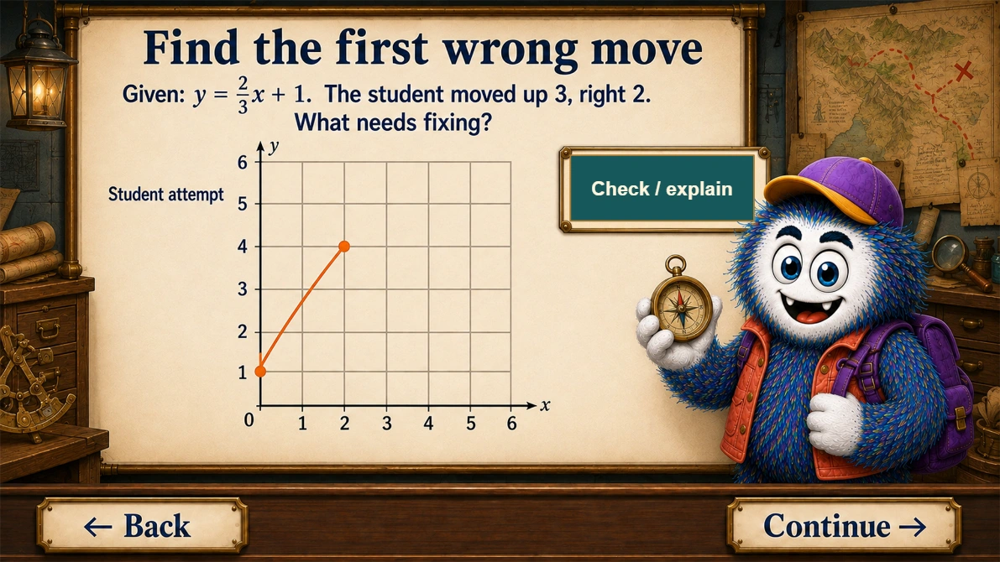
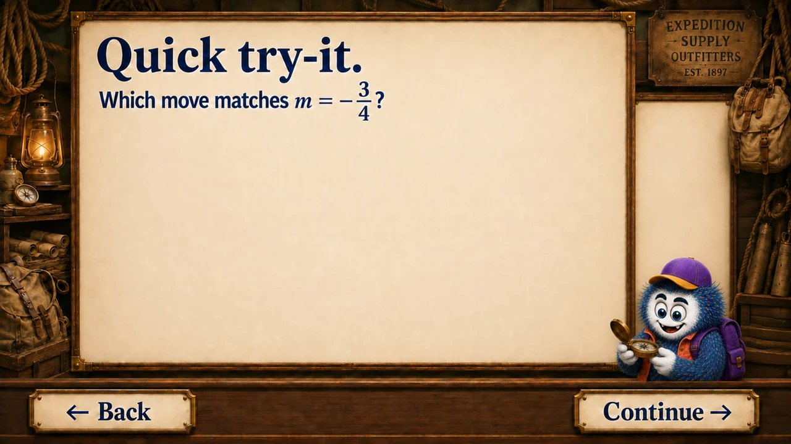
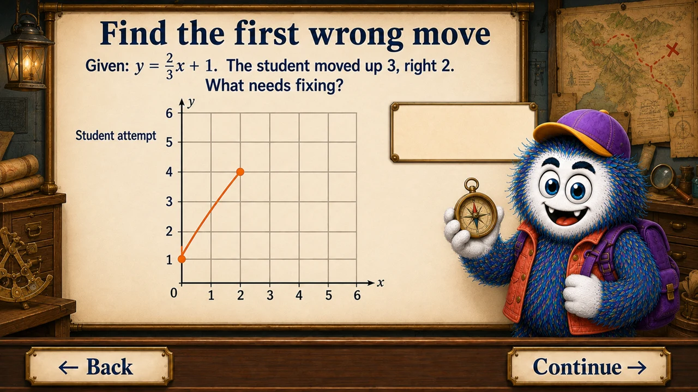
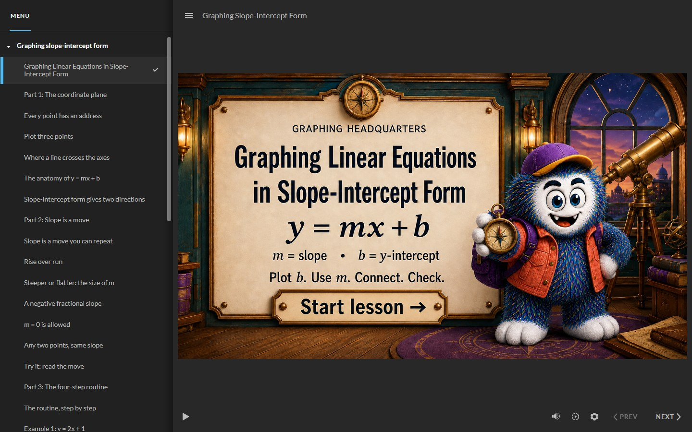

Guided practice · Articulate Storyline
Graphing Slope-Intercept Form
Make a misconception visible. Learners connect slope to a move, test an interpretation, and repair the first wrong step.
My role Instructional sequence, mathematics, visual direction, and interaction requirements.
Explore the three-moment course tour →
Production checks documented · Accessibility review and learner testing pending
{kind=link}

A short look inside · Actual browser recording
A small choice reveals the misconception.
For a slope of −3/4, the practice distinguishes down 3, right 4 from reversing rise and run.
This silent, captioned walkthrough shows one practice route. Use the full lesson to explore the other choices.
Try the full lesson →Read the walkthrough transcript
- The learner interprets a slope of −3/4.
- The learner chooses down 4, right 3.
- Feedback identifies the reversed rise and run.
- The learner retries and chooses down 3, right 4.
- The course confirms the move and awards a practice star.
About two minutes · Suggested review
Three moments to look for.
Inspect three moments below without loading the player. These are the actual course artwork with explanations; live controls and feedback appear in the interactive lesson. Use the listed Menu titles to explore them in the course.
- 01
See the model

Course artwork · select to enlarge Make the process visible
The learner gets an ordered routine before independent practice. The final check connects the graph back to its equation.
Player menu: “The routine, step by step”
- 02
Try the feedback

Course artwork · select to enlarge Isolate one decision
For a slope of −3/4, moving down 3 and right 4 works; moving up 3 and left 4 also works. The live course adds selectable responses and feedback to this artwork.
Player menu: “Try it: read the move”
- 03
Inspect error analysis

Course artwork · select to enlarge Name the misconception
The starting point (0, 1) is correct. Rise and run are reversed: the next point should be (3, 3), using up 2 and right 3.
Player menu: “Find the first wrong move: rise and run”
{kind=link}
{kind=link}
Try the lesson
Start with the instruction, or use the player menu to explore a section. Practice stars and checkpoint stamps are separate from the final quiz score. For the clearest view of the graphs, use a larger screen or open the lesson full-size.

This portfolio Web version runs in your browser. Quiz scores are shown within the lesson; they are not submitted to an LMS.
In-lesson graphing practice · Ungraded
Build the graph yourself
Plot the intercept, choose a second point, and check your line in five Scribble settings. Explore positive, negative, fractional, zero, and steep slopes with feedback and unlimited retries. Tap a grid intersection or enter coordinates with the keyboard.
All five activities are embedded in the Storyline lesson. Open the player menu, choose “The recap, before you level up,” then select “Graph on your own.” Practice is ungraded and does not change the final quiz score.
The learning problem
Students can identify slope and intercept in y = mx + b but still confuse where to begin, reverse rise and run, or move in the wrong direction. The lesson keeps the task focused: graph a line from its equation in slope-intercept form.
How the experience works
- Teach: examples connect the y-intercept to a starting point and slope to a repeatable move.
- Try: ungraded choices and reveals give learners room to test their understanding, earning up to five stars and five checkpoint stamps.
- Check: a 20-question multiple-choice quiz awards up to 200 points, followed by results, answer review, and a retry option.
Native Storyline buttons, feedback layers, variables, and triggers control the interactions. The illustrated scenes provide the setting; the player handles navigation and learner choices.
Design and production
I directed the lesson sequence, mathematics, visual scenes, and interaction requirements. Production combined AI-assisted Scribble artwork and build support with native Storyline assembly and verification. The coordinate-plane artwork was reviewed alongside the equation and plotted points; interaction controls remain separate from the scene artwork.
The finished course includes Previous/Next navigation, student-facing menu titles, practice feedback, quiz review and retry, and native accessibility labels and reading-order adjustments.
Evidence and next evaluation
The authored project was tested for practice rewards, quiz scoring, pass/fail results, answer review, and retry behavior. The revised project received a visual review of all 60 screens, with refinements to buttons, graph panels, feedback, and quiz-answer spacing. Accessibility review remains in progress; the revised native project reports 35 items in Storyline’s built-in checker.
These are production checks, not learner-impact data or accessibility certification. Learner testing and a full assistive-technology evaluation remain the next evaluation steps.